The following topics will help you become more familiar with using the DateTimePickerAdv control:
DateTimePickerAdv has child controls like DropDown, Updown arrows, checkbox. This section discusses the properties which controls the appearance and behavior of these controls.
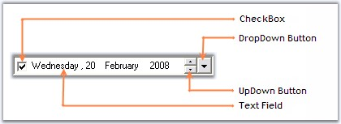
Figure 251: Child Controls in DateTimePickerAdv
3.3.3.2.3.1.1 UpDown and DropDown Buttons
This section discusses the properties of DateTimePickerAdv control which customizes the UpDown and DropDown buttons.
UpDown Buttons
The below properties controls the appearance and behavior of the UpDown buttons.
|
DateTimePickerAdv Properties |
Description |
|
ShowUpDown |
Shows or hides the UpDown buttons. |
|
ShowUpDownOnFocus |
Shows or hides the UpDown button when focussed. By default it is set to false. |
|
VSLikeUpDown |
Specifies whether the UpDown button will have VS-like look. |
|
[C#]
this.dateTimePickerAdv2.ShowUpDown = true; this.dateTimePickerAdv2.ShowUpDownOnFocus = true; |
|
[VB.NET]
Me.dateTimePickerAdv2.ShowUpDown = True Me.dateTimePickerAdv2.ShowUpDownOnFocus = True |
In the below image, when focus is on button control, the updown button is hidden. In the second image, DateTimePickerAdv is focussed and the UpDown button is shown.
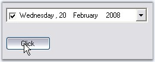
Figure 252: UpDown button Hidden
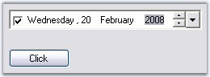
Figure 253: UpDown button Shown
Figure 254: VS-Like UpDown Button in Office2007 Style
DropDown Button
DropDown button in the DateTimePickerAdv is visible by default. To hide the dropdown button set ShowDropDown property to false. The below are the properties available, to change the default appearance of the control.
Color Settings
At run time, drop down button can be in normal mode, pressed mode or in selected mode. Different colors can be set for different modes.
|
DateTimePickerAdv Properties |
Description |
|
DropDownNormalColor |
Gets or Sets the dropdown backcolor in Normal mode. |
|
DropDownPressedColor |
Gets or Sets the dropdown backcolor in Pressed mode, i.e, when the date is selected in the text field. |
|
DropDownSelectedColor |
Gets or Sets the dropdown backcolor in Selected mode, i.e, when a date is selected using the popup calendar. |
|
[C#]
this.dateTimePickerAdv2.DropDownNormalColor = System.Drawing.Color.LightBlue; this.dateTimePickerAdv2.DropDownPressedColor = System.Drawing.Color.Goldenrod; this.dateTimePickerAdv2.DropDownSelectedColor = System.Drawing.Color.SteelBlue; |
|
[VB.NET]
Me.dateTimePickerAdv2.DropDownNormalColor = System.Drawing.Color.LightBlue Me.dateTimePickerAdv2.DropDownPressedColor = System.Drawing.Color.Goldenrod Me.dateTimePickerAdv2.DropDownSelectedColor = System.Drawing.Color.SteelBlue |
 Note: These settings will be effective only
when DateTimePickerAdv.Style is Office2003, OfficeXP and VS2005.
Note: These settings will be effective only
when DateTimePickerAdv.Style is Office2003, OfficeXP and VS2005.
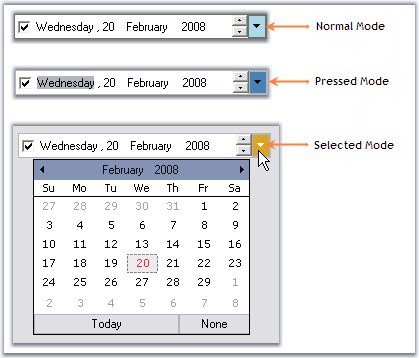
Figure 255: Different color set for Different Modes of DropDown Button
Flat Appearance
Dropdown can be given flat appearance using FlatDropDown property. By default it is false.
|
[C#]
this.dateTimePickerAdv2.FlatDropButton = true; |
|
[VB.NET]
this.dateTimePickerAdv2.FlatDropButton = true; |
Note: These setting will be effective only
when DateTimePickerAdv.Style is Default.
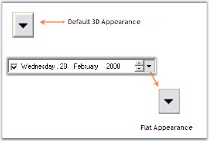
Figure 256: Flat Appearance for DropDown Button
Alignment of the DropDown
When the dropdown button is clicked, the calendar pops up, based on the alignment specified in DropDownAlign property. Default value is Left.
|
[C#]
this.dateTimePickerAdv1.DropDownAlign = System.Windows.Forms.LeftRightAlignment.Right; |
|
[VB.NET]
Me.dateTimePickerAdv1.DropDownAlign = System.Windows.Forms.LeftRightAlignment.Right |
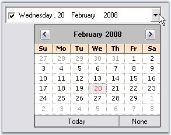
Figure 257: DropDownAlign = "Right"
Image for DropDown
The existing dropdown icon can be replaced with a custom image using the below properties.
|
DateTimePickerAdv Properties |
Description |
|
DropDownImage |
Gets or Sets the Image for dropdown button. |
|
StretchDropDownImage |
Specifies whether the image of the dropdown is stretched. |
|
[C#]
this.dateTimePickerAdv1.DropDownImage = ((System.Drawing.Image)(resources.GetObject("dateTimePickerAdv1.DropDownImage"))); this.dateTimePickerAdv1.StretchDropDownImage = true; |
|
[VB.NET]
Me.dateTimePickerAdv1.DropDownImage = DirectCast((resources.GetObject("dateTimePickerAdv1.DropDownImage")), System.Drawing.Image) Me.dateTimePickerAdv1.StretchDropDownImage = True |
Figure 258: Custom Image for DropDown Button
Figure 259: Stretched Custom Image
See Also
By default the DateTimePicker control has a checkbox in checked state. This checkbox can be hidden using ShowCheckBox property and the state can be unchecked through designer, using Checked property.
|
[C#]
this.dateTimePickerAdv1.ShowCheckBox = false; this.dateTimePickerAdv5.Checked = false; |
|
[VB.NET]
Me.dateTimePickerAdv1.ShowCheckBox = False Me.dateTimePickerAdv5.Checked = False |
Figure 260: Unchecked State of the CheckBox
See Also
Text Field, UpDown and DropDown Buttons
This section discusses the properties related to Checkbox and text field in the DateTimePicker control.
CheckBox
By default the DateTimePicker control has a checkbox in checked state. This checkbox can be hidden using ShowCheckBox property and the state can be unchecked through designer, using Checked property.
|
[C#]
this.dateTimePickerAdv1.ShowCheckBox = false; this.dateTimePickerAdv5.Checked = false; |
|
[VB.NET]
Me.dateTimePickerAdv1.ShowCheckBox = False Me.dateTimePickerAdv5.Checked = False |
Figure 261: Unchecked State of the CheckBox
Text Field Formatting
Format and CustomFormat properties are used to format the text field. Below are the details
|
DateTimePickerAdv Properties |
Description |
|
Format |
Gets or Sets the format of the picker. The options are,
Long(default), Short, Time and Custom. |
|
CustomFormat |
Specifies the custom format, when the Format is set to 'Custom'. For example, If you want to display 'March/2007', set CustomFormat to 'MMMM/yyyy' |
|
[C#]
//Sets "Long" format for the text field this.dateTimePickerAdv5.Format = System.Windows.Forms.DateTimePickerFormat.Long;
//Sets "Short" format for the text field this.dateTimePickerAdv5.Format = System.Windows.Forms.DateTimePickerFormat.Short;
//Sets "Time" format for the text field this.dateTimePickerAdv5.Format = System.Windows.Forms.DateTimePickerFormat.Time;
//Sets custom format for the text field this.dateTimePickerAdv5.Format = System.Windows.Forms.DateTimePickerFormat.Custom; this.dateTimePickerAdv5.CustomFormat = "dd - MM - yyyy"; |
|
[VB.NET]
'Sets "Long" format for the text field Me.dateTimePickerAdv5.Format = System.Windows.Forms.DateTimePickerFormat.Long
'Sets "Short" format for the text field Me.dateTimePickerAdv5.Format = System.Windows.Forms.DateTimePickerFormat.Short
'Sets "Time" format for the text field Me.dateTimePickerAdv5.Format = System.Windows.Forms.DateTimePickerFormat.Time
'Sets custom format for the text field Me.dateTimePickerAdv5.Format = System.Windows.Forms.DateTimePickerFormat.Custom Me.dateTimePickerAdv5.CustomFormat = "dd - MM - yyyy" |
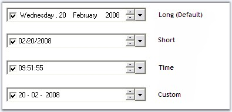
Figure 262: TextField Formats for DateTimePickerAdv
Spacing in TextField
We can specify spacing for the text field in the control, (ex: between month, year and date) using Spacing property. Default value is 0.
|
[C#]
this.dateTimePickerAdv1.Spacing = 5; |
|
[VB.NET]
Me.dateTimePickerAdv1.Spacing = 5 |
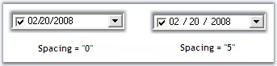
Figure 263: Spacing Applied to TextField
Note: The text field can be refreshed
programmatically by calling DateTimePickerAdv.RefreshFields() method.
See Also
Navigating between Fields, UpDown and DropDown Buttons
3.3.3.2.3.1.3.1 Null Value Settings
At run time, on clicking the "None" button of the popup calendar, "No date is selected" string will be displayed in the text field like the below image.
Figure 264: NullValue Selected
This default string can be changed using NullString property. Below table describes the properties which controls the Null value behavior.
|
DateTimePickerAdv Properties |
Description |
|
EnableNullDate |
Specifies whether null date support is enabled. If it is set to false, DateTimePickerAdv will always have a selected date instead of null string .i.e, text field displays the selected date even when None button is selected. By default it is true. |
|
EnableNullKeys |
Specifies Backspace or Delete keys makes the date null. EnableNullDate must be set to true to make this setting effective. |
|
NullString |
Specifies the text visible when there is no date selected. EnableNullDate must be set to true to make this setting effective. |
|
NullModeKeyReset |
Specifies what keys will toggle off null date. i.e, when null value is selected, by pressing the keys we can replace the null value with date selected. The keys are,
ArrowKeys (default), NumericKeys and Any.
EnableNullDate must be set to true to make this setting effective. |
|
IsNullDate |
Set this to true, if you want to display null value (String specified in NullString) instead of current value, specified using DateTimePicker.value property. By default it is set to false. |
|
[C#]
this.dateTimePickerAdv1.EnableNullDate = true; this.dateTimePickerAdv1.EnableNullKeys = true; this.dateTimePickerAdv1.NullString = "Null Value" this.dateTimePickerAdv1.NullModeKeyReset = Syncfusion.Windows.Forms.Tools.NullModeKeyReset.NumericKeys; |
|
[VB.NET]
Me.dateTimePickerAdv1.EnableNullDate = True Me.dateTimePickerAdv1.EnableNullKeys = True Me.dateTimePickerAdv1.NullString = "Null Value" Me.dateTimePickerAdv1.NullModeKeyReset = Syncfusion.Windows.Forms.Tools.NullModeKeyReset.NumericKeys |
Figure 265: Custom NullString for Text Field
DateTimePickerAdv control contains embedded calendar control which pops-up on clicking the dropdown button at the end of the control. The popup calendar is a MonthCalendarAdv control and hence supports all the properties of the MonthCalendarAdv control. These properties of the calendar can be accessed using DateTimePickerAdv.Calendar.TodayButton (for example) property.
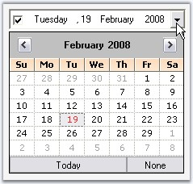
Figure 266: Calendar Popup in a DateTimePickerAdv
Additionally, the calendar popup can be customized using the DateTimePickerAdv properties. Refer Customizing the Calendar topic.
Day Names
In the calendar, we can specify whether shortest day names can be used or not using UseShortestDayNames property. By default it is true.
|
[C#]
this.dateTimePickerAdv1.UseShortestDayNames = false; |
|
[VB.NET]
Me.dateTimePickerAdv1.UseShortestDayNames = False |
Buttons in Calendar
We can specify the visibility of the None button using NoneButtonVisible property. Default value is true.
|
[C#]
this.dateTimePickerAdv1.NoneButtonVisible = false; |
|
[VB.NET]
Me.dateTimePickerAdv1.NoneButtonVisible = False |
Note: None button will not be visible
when EnableNullDate property is set to false. See Null Value
Settings to know about EnableNullDate property.
3.3.3.2.3.2.1 Customizing the Calendar
DateTimePickerAdv control has properties which can improve the look and feel of the popup calendar. This section discusses various appearance settings available for the calendar.
Background Settings
The background of the Calendar can be customized using below properties.
|
DateTimePickerAdv Properties |
Description |
|
CalendarMonthBackground |
Sets the background color for the popup calendar. |
|
CalendarTitleBackColor |
Sets the background of the calendar header. |
|
[C#]
this.dateTimePickerAdv1.CalendarMonthBackground = System.Drawing.Color.OldLace; this.dateTimePickerAdv1.CalendarTitleBackColor = System.Drawing.Color.Wheat; |
|
[VB.NET]
Me.dateTimePickerAdv1.CalendarMonthBackground = System.Drawing.Color.OldLace Me.dateTimePickerAdv1.CalendarTitleBackColor = System.Drawing.Color.Wheat |
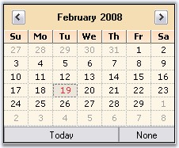
Figure 267: CalendarMonthBackground = "OldLace"; CalendarTitleBackColor = "Wheat"
Foreground Settings
The foreground appearance can be customized using the below properties.
|
DateTimePickerAdv Properties |
Description |
|
CalendarFont |
Sets font style for the text in the popup calendar. |
|
CalendarForeColor |
Sets the fore color of the popup calendar. |
|
CalendarTitleForeColor |
Specifies the fore color of the calendar header. |
|
CalendarTrailingForeColor |
Specifies the fore color of the inactive month date. |
|
[C#]
this.dateTimePickerAdv1.CalendarFont = new System.Drawing.Font("Microsoft Sans Serif", 8.25F, System.Drawing.FontStyle.Italic); this.dateTimePickerAdv1.CalendarForeColor = System.Drawing.Color.SaddleBrown; this.dateTimePickerAdv1.CalendarTitleForeColor = System.Drawing.Color.SaddleBrown; this.dateTimePickerAdv1.CalendarTrailingForeColor = System.Drawing.Color.Blue; |
|
[VB.NET]
Me.dateTimePickerAdv1.CalendarFont = New System.Drawing.Font("Microsoft Sans Serif", 8.25F, System.Drawing.FontStyle.Italic) Me.dateTimePickerAdv1.CalendarForeColor = System.Drawing.Color.SaddleBrown Me.dateTimePickerAdv1.CalendarTitleForeColor = System.Drawing.Color.SaddleBrown Me.dateTimePickerAdv1.CalendarTrailingForeColor = System.Drawing.Color.Blue |
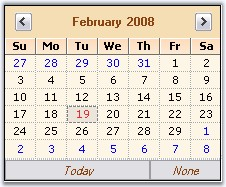
Figure 268: TitleForeColor = "SaddleBrown"; CalendarForeColor = "SaddleBrown";
CalendarFont = "Italic"; TrailingForeColor = "Blue"
Calendar Size
The default size of the popup calendar can be changed using the below properties.
|
DateTimePickerAdv Properties |
Description |
|
CalendarSize |
Indicates size of the popup calendar. |
|
CalendarSizeToFit |
Indicates whether the calendar will size to fit according to the size of the days. |
|
[C#]
this.dateTimePickerAdv1.CalendarSize = new System.Drawing.Size(250, 200); this.dateTimePickerAdv1.CalendarSizeToFit = false; |
|
[VB.NET]
Me.dateTimePickerAdv1.CalendarSize = New System.Drawing.Size(250, 200) Me.dateTimePickerAdv1.CalendarSizeToFit = False |
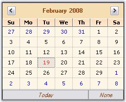
Figure 269: Size set for the Popup Calendar
See Also
In the Popup calendar, today's date will be selected by default, at run time. This default date can be changed using Value property. You can also specify the range of values / dates that can be selected at run time.
|
DateTimePickerAdv Properties |
Description |
|
MaxValue |
Specifies the maximum value that can be picked from the DateTimePickerAdv. |
|
MinValue |
Specifies the minimum value that can be picked from the DateTimePickerAdv. |
|
[C#]
this.dateTimePickerAdv1.Value = new System.DateTime(2008, 2, 23, 16, 15, 46, 0); this.dateTimePickerAdv1.MaxValue = new System.DateTime(2008, 12, 31, 23, 59, 0, 0); this.dateTimePickerAdv1.MinValue = new System.DateTime(2007, 1, 1, 0, 0, 0, 0); |
|
[VB.NET]
Me.dateTimePickerAdv1.Value = New System.DateTime(2008, 2, 23, 16, 15, 46, 0) Me.dateTimePickerAdv1.MaxValue = New System.DateTime(2008, 12, 31, 23, 59, 0, 0) Me.dateTimePickerAdv1.MinValue = New System.DateTime(2007, 1, 1, 0, 0, 0, 0) |
See Also
In the designer, DateTimePickerAdv control has shortcut for some property settings in its Task Window. Task Window is opened through the control's smart tag option.
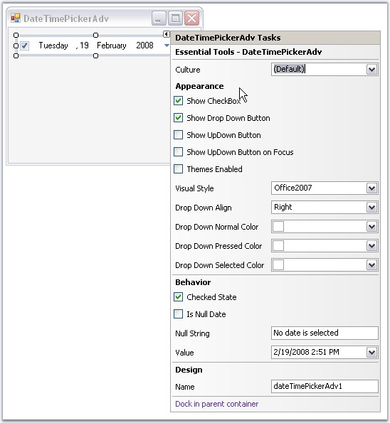
Figure 270: Tasks Window of DateTimePickerAdv Control
This below topics discusses the background and border settings for the DateTimePickerAdv control.
3.3.3.2.3.4.1 Background Settings
DateTimePickerAdv control can have custom back color and background images using the properties discussed in this section.
Background Color
The control's back color can be set using the below properties.
|
DateTimePickerAdv Properties |
Description |
|
BackColor |
Sets the back color for the DateTimePickerAdv control. |
|
BackgroundColor |
Sets Solid, Gradient or Pattern style of background for the control. This property setting will override the BackColor property setting. |
|
[C#]
this.dateTimePickerAdv1.BackColor = System.Drawing.Color.Cornsilk; this.dateTimePickerAdv1.BackgroundColor = new Syncfusion.Drawing.BrushInfo(Syncfusion.Drawing.GradientStyle.Vertical, System.Drawing.Color.Linen, System.Drawing.Color.BurlyWood); |
|
[VB.NET]
Me.dateTimePickerAdv1.BackColor = System.Drawing.Color.Cornsilk Me.dateTimePickerAdv1.BackgroundColor = New Syncfusion.Drawing.BrushInfo(Syncfusion.Drawing.GradientStyle.Vertical, System.Drawing.Color.Linen, System.Drawing.Color.BurlyWood) |
Figure 271: Gradient Background for DateTimePicker
Background Image
Background image for the DateTimePickerAdv is set using the below property.
|
DateTimePickerAdv Properties |
Description |
|
BackgroundImage |
Sets the background image for the control. |
|
BackgroundImageLayout |
Sets the background image layout for the control. |
|
[C#]
this.dateTimePickerAdv2.BackgroundImage = ((System.Drawing.Image)(resources.GetObject("dateTimePickerAdv2.BackgroundImage"))); |
|
[VB.NET]
Me.dateTimePickerAdv2.BackgroundImage = DirectCast((resources.GetObject("dateTimePickerAdv2.BackgroundImage")), System.Drawing.Image) |
Figure 272: Background Image for DateTimePickerAdv
See Also
The wide variety of border options are available for DateTimePickerAdv control when they are in 2D or in 3D mode. The properties in the below table illustrates the border settings.
|
DateTimePickerAdv Properties |
Description |
|
BorderStyle |
Specifies whether the DateTimePickerAdv should have a border and if it is 2D or 3D border. The options are,
· None · FixedSingle · Fixed3D(Default) |
|
Border3DStyle |
Specifies the 3D border style of the DateTimePickerAdv. The options are,
· Raised · RaisedOuter · RaisedInner · Sunken(Default) · SunkenOuter · SunkenInner · Etched · Bump · Adjust · Flat |
|
BorderSingle |
Specifies the 2D border style of the DateTimePickerAdv. The options are,
· None · Dotted · Dashed · Solid (default) · Inset · Outset |
|
BorderSides |
Specifies the sides of the control which should have a border. The sides are,
· Left · Top · Right · Bottom · Middle · All (Default) |
|
BorderColor |
Specifies the color of the 2D border when BorderStyle is set FixedSingle. |
|
[C#]
//Sets 2D border this.dateTimePickerAdv1.BorderStyle = System.Windows.Forms.BorderStyle.FixedSingle; //Sets 2D border style this.dateTimePickerAdv1.BorderSingle = System.Windows.Forms.ButtonBorderStyle.Dashed; //Sets border for all the side of the control this.dateTimePickerAdv1.BorderSides = System.Windows.Forms.Border3DSide.All; //Sets color for the 2D border this.dateTimePickerAdv1.BorderColor = System.Drawing.Color.SteelBlue;
//Sets 3D border this.dateTimePickerAdv1.BorderStyle = System.Windows.Forms.BorderStyle.Fixed3D; //Sets SunkenInner 3D border style this.dateTimePickerAdv1.Border3DStyle = System.Windows.Forms.Border3DStyle.SunkenInner; |
|
[VB.NET]
'Sets 2D border Me.dateTimePickerAdv1.BorderStyle = System.Windows.Forms.BorderStyle.FixedSingle 'Sets 2D border style Me.dateTimePickerAdv1.BorderSingle = System.Windows.Forms.ButtonBorderStyle.Dashed 'Sets border for all the side of the control Me.dateTimePickerAdv1.BorderSides = System.Windows.Forms.Border3DSide.All 'Sets color for the 2D border Me.dateTimePickerAdv1.BorderColor = System.Drawing.Color.SteelBlue
'Sets 3D border Me.dateTimePickerAdv1.BorderStyle = System.Windows.Forms.BorderStyle.Fixed3D 'Sets SunkenInner 3D border style Me.dateTimePickerAdv1.Border3DStyle = System.Windows.Forms.Border3DStyle.SunkenInner |
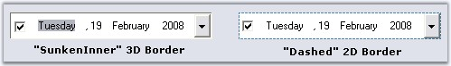
Figure 273: Border Style for DateTimePickerAdv
See Also
This section covers the below topics:
We can set images for the popup menu of the Calendar using MonthImageList property of DateTimePickerAdv control.
|
[C#]
// imageList1 this.imageList1.ImageSize = new System.Drawing.Size(16, 16); this.imageList1.ImageStream = ((System.Windows.Forms.ImageListStreamer)(resources.GetObject("imageList1.ImageStream")));
// ImageList of the PopupMenu of the Popup Calendar this.dateTimePickerAdv1.MonthImageList = this.imageList1; |
|
[VB.NET]
' imageList1 Me.imageList1.ImageSize = New System.Drawing.Size(16, 16) Me.imageList1.ImageStream= (CType(resources.GetObject("imageList1.ImageStream"), System.Windows.Forms.ImageListStreamer))
' ImageList of the PopupMenu of the Popup Calendar Me.dateTimePickerAdv1.MonthImageList = Me.imageList1 |
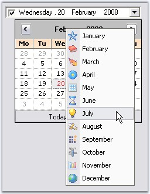
Figure 274: Images for the Popup Menu
When you right-click on a DateTimePickerAdv control at run time, a context menu will be displayed like the below image.
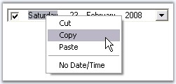
Figure 275: Default Context Menu
This default context menu can be replaced with Syncfusion XP Menu by setting UseEnhancedMenu property to true. By default it is set to false.
|
[C#]
this.dateTimePickerAdv1.UseEnhancedMenu = true; |
|
[VB.NET]
Me.dateTimePickerAdv1.UseEnhancedMenu = True |
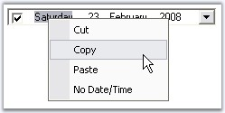
Figure 276: Syncfusion XP Menu as Context Menu
Menu Options
The menu options are:
· Cut - Cuts the displayed date and by default displays "No Date is selected" string.
· Copy - Copies the displayed date and stores in clipboard.
· Paste - Pastes the copied date.
· No Date/Time - Selects no date and displays "No Date is selected".
We can set the text value format that is copied to the clipboard using ClipboardFormat property.
|
DateTimePickerAdv Properties |
Description |
|
ClipboardFormat |
While doing copy / paste operation, we can specify the format of the value of the DateTimePickerAdv control that is copied, by using ClipBoardFormat property. The formats are,
· Long(default) · Short · Time · Custom |
|
CopyFieldsOnly |
Indicates whether only the selected field will be copied or the whole text field will be copied. |
|
[C#]
this.dateTimePickerAdv1.CopyFieldsOnly = true; this.dateTimePickerAdv1.ClipboardFormat = System.Windows.Forms.DateTimePickerFormat.Short; |
|
[VB.NET]
Me.dateTimePickerAdv1.CopyFieldsOnly = True Me.dateTimePickerAdv1.ClipboardFormat = System.Windows.Forms.DateTimePickerFormat.Short |
See Also
Text Field, Null value Settings
3.3.3.2.3.5.3 Navigating between fields
At run time, user can easily navigate between values in the text field like date, month, year, time using the TAB key. The below properties settings are necessary for tabbing between the fields.
|
DateTimePickerAdv Properties |
Description |
|
TabStop |
Indicates whether the user can use the Tab key, to focus the DateTimePickerAdv control. |
|
TabForwarding |
Indicates if the control will moves its focus to the next field when the tab key is pressed. |
|
TabIndex |
Indicates the index in the TAB order that this control will occupy. |
|
TabLeave |
Indicates whether the focus should be moved away from the control, when there is no fields to tab through. |
|
[C#]
this.dateTimePickerAdv1.TabForwarding = true; this.dateTimePickerAdv1.TabIndex = 1; this.dateTimePickerAdv1.TabLeave = true; this.dateTimePickerAdv1.TabStop = true; |
|
[VB.NET]
Me.dateTimePickerAdv1.TabForwarding = True Me.dateTimePickerAdv1.TabIndex = 1 Me.dateTimePickerAdv1.TabLeave = True Me.dateTimePickerAdv1.TabStop = True |
Themes
We can apply themes for the DateTimePickerAdv and also the child controls using the below properties.
|
DateTimePickerAdv Properties |
Description |
|
ThemesEnabled |
Specifies whether to enable themes for the DateTimePickerAdv control. |
|
ThemedChildControls |
Setting ThemesEnabled to true will not enable themes for its child controls (CheckBox, DropDown , UpDown and Calendar). To enable themes for the child controls of the DateTimePicker, set ThemedChildControls to true. |
|
[C#]
this.dateTimePickerAdv1.ThemesEnabled = true; this.dateTimePickerAdv1.ThemedChildControls = true; |
|
[VB.NET]
Me.dateTimePickerAdv1.ThemesEnabled = True Me.dateTimePickerAdv1.ThemedChildControls = True
' Setting backcolor for the control when it is ReadOnly Me.dateTimePickerAdv1.ReadOnly = True Me.dateTimePickerAdv1.IgnoreThemeBackground = True |
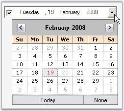
Figure 277: DateTimePicker and Child Controls Without Themes
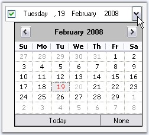
Figure 278: DateTimePicker and Child Controls With Themes
Styles
Visual Styles for the DateTimePickerAdv and its child controls can be applied using the Style property.
|
DateTimePickerAdv Properties |
Description |
|
Style |
Specifies the Office style of the picker. The options are :
· OfficeXP · Office2003 · VS2005 · Office2007 · Default (default) |
|
Office2007Theme |
Indicates the office color scheme used, when Style is set to Office2007. |
|
[C#]
// Sample for setting Office2007 style for the control this.dateTimePickerAdv1.Style = Syncfusion.Windows.Forms.VisualStyle.Office2007; |
|
[VB.NET]
' Sample for setting Office2007 style for the control Me.dateTimePickerAdv1.Style = Syncfusion.Windows.Forms.VisualStyle.Office2007 |
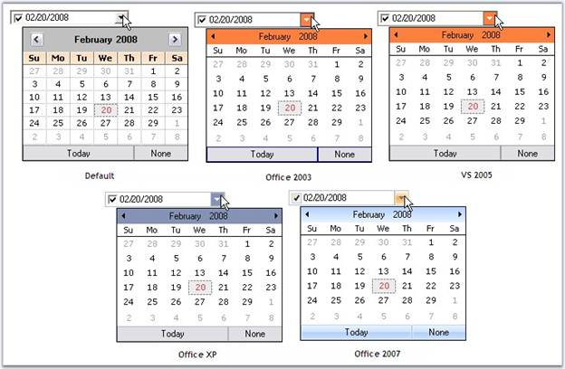
Figure 279: Visual Styles for DateTimePickerAdv
|
[C#]
//Sets the Color scheme as Blue when the style is Office2007 this.dateTimePickerAdv1.Office2007Theme = Syncfusion.Windows.Forms.Office2007Theme.Blue; |
|
[VB.NET]
'Sets the Color scheme as Blue when the style is Office2007 Me.dateTimePickerAdv1.Office2007Theme = Syncfusion.Windows.Forms.Office2007Theme.Blue |
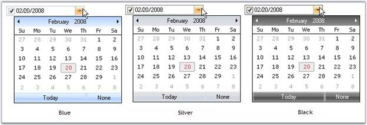
Figure 280: Office Color Scheme for DateTimePickerAdv Control
Custom Colors
We can also apply custom colors to the DateTimePickerAdv control by setting Office2007Theme to "Managed" and specifying the custom color through the ApplyManagedColors method as follows.
|
[C#]
this.dateTimePickerAdv1.Office2007Theme = Syncfusion.Windows.Forms.Office2007Theme.Managed; Office2007Colors.ApplyManagedColors(this, Color.Orange); |
|
[VB.NET]
Me.dateTimePickerAdv1.Office2007Theme = Syncfusion.Windows.Forms.Office2007Theme.Managed; Office2007Colors.ApplyManagedColors(Me, Color.Orange) |
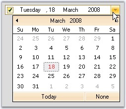
Figure 281: Custom Color = "Orange"
This section covers the below topics:
Essential Tools supports extensive DataBinding in DateTimePickerAdv using the Value and BindableValue property. The following example illustrates the DataBinding of the DataSet belonging to a DataGrid.
Note: Always use BindableValue property if dataset
contains Null value. In cases where no Null value exists in the dataset, Value
property can be used.
To bind a DateTimePickerAdv, perform the following steps.
1. Add a DateTimePickerAdv and a DataGrid controls to the form.
2. Create a dataset using the code below.
|
[C#]
// Creating DataSet,Table and rows. DataSet dataSet = null; DataTable table = null;
dataSet = new DataSet(); table = dataSet.Tables.Add("Table");
table.Columns.Add("DateTimeColumn", typeof(DateTime));
table.Columns[0].AllowDBNull = true;
table.Rows.Add(new object[]{DateTime.Now - TimeSpan.FromDays(60)}); table.Rows.Add(new object[]{DateTime.Now}); table.Rows.Add(new object[]{DBNull.Value}); |
|
[VB.NET]
' Creating DataSet,Table and rows. Private dataSet As DataSet = Nothing Private table As DataTable = Nothing
Private dataSet = New DataSet() Private table = dataSet.Tables.Add("Table")
table.Columns.Add("DateTimeColumn", GetType(DateTime))
Private table.Columns(0).AllowDBNull = True
table.Rows.Add(New Object(){DateTime.Now - TimeSpan.FromDays(60)}) table.Rows.Add(New Object(){DateTime.Now}) table.Rows.Add(New Object(){DBNull.Value}) |
3. Assign the dataset to the DataGrid control using its DataSource property. Set the control's DataMember property to the member that must be bound.
|
[C#]
dataGrid1.DataSource = dataSet; dataGrid1.DataMember = "Table"; |
|
[VB.NET]
Private dataGrid1.DataSource = dataSet Private dataGrid1.DataMember = "Table" |
4. Bind the datasource with the DateTimePickerAdv control.
|
[C#]
// Setting the BindableValue property in order to Data Bind. dateTimePickerAdv1.DataBindings.Add("BindableValue", dataSet, "Table.DateTimeColumn"); dateTimePickerAdv1.Focus(); |
|
[VB.NET]
' Setting the BindableValue property in order to Data Bind. dateTimePickerAdv1.DataBindings.Add("BindableValue", dataSet, "Table.DateTimeColumn") dateTimePickerAdv1.Focus() |
5. Run the application. Select a data in the datagrid and DateTimePicker will display the corresponding date value (The DateTimePickerAdv is bound to the datasource using BindableValue property as datasource contains Null value. Selecting in the datagrid will automatically position the datasource to the related row which will update the DateTimePickerAdv with the appropriate data).
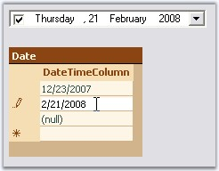
Figure 282: DateTimePickerAdv Bound to DataSet
A sample which demonstrates this feature is available in the below sample installation path.
..\My Documents\Syncfusion\EssentialStudio\Version Number\Windows\Tools.Windows\Samples\2.0\Editors Package\CalendarControls
DateTimePickerAdv supports globalization through DateTimePickerAdv.Culture property.
|
DateTimePickerAdv Properties |
Description |
|
Culture |
Gets or sets the current culture of the DateTimePickerAdv control. UseCurrentCulture should be set to false to make this setting effective. |
|
UseCurrentCulture |
Specifies whether the current culture of the machine will be used. By default it is false. |
|
[C#]
this.dateTimePickerAdv1.UseCurrentCulture = false; this.dateTimePickerAdv1.Culture = new System.Globalization.CultureInfo("hi-IN"); |
|
[VB.NET]
Me.dateTimePickerAdv1.UseCurrentCulture = False Me.dateTimePickerAdv1.Culture = New System.Globalization.CultureInfo("hi-IN") |
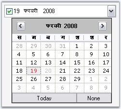
Figure 283 Culture="Hindi(India)"
3.3.3.2.3.7.3 Custom PopupWindow
This section deals with creating a custom popup window for the DateTimePickerAdv control. We can implement IDateTimePickerAdvCalendar interface to drop down a custom window.
IDateTimePickerAdvCalendar Interface Members
|
IDateTimePickerAdvCalendar Member |
Description |
|
Active |
Boolean value indicating if the DateTimePickerAdv should consider the interface events fired by this control. |
|
Appearance properties (CalendarFont, CalendarForeColor, CalendarMonthBackground, TitleBackColor, TitleForeColor and TrailingForeColor) |
CalendarFont - Gets / sets the font used to draw the calendar that implements the interface, CalendarForeColor - Gets / sets the color used to draw the foreground of calendar that implements the interface, CalendarMonthBackground - Gets / sets the color used to draw the month background of calendar that implements the interface, TitleBackColor - Gets / sets the color used to draw the title background of calendar that implements the interface, TitleForeColor - Gets / sets the color used to draw the foreground of the title of calendar that implements the interface, TrailingForeColor - Gets / sets the color used to draw the trailing foreground of calendar that implements the interface. |
|
Value properties (MinDate, MaxDate, Value) |
MinDate - Gets / sets the minimum date of the calendar that implements the interface, MaxDate - Gets / sets the maximum date of the calendar that implements the interface and Value - Gets / sets the date of the calendar that implements the interface. |
|
Culture |
Gets or set the culture of the calendar that implements this interface. |
|
IDateTimePickerAdvCalendar Events |
Description |
|
NullButtonDown |
Event is similar to the DateTimePickerAdv.NullButtonEventHandler. It is handled when the none button is clicked or when the control implementing the interface wants the DateTimePickerAdv to have the NullString displayed. |
|
SelectDate |
Event is similar to the DateTimePickerAdv.SelectDateEventHandler. It is handled when the user selects a date on the control implementing the interface or the control wants the popup to close and set the picker's date to the Value member. |
|
DateChange |
Event is similar to the DateTimePickerAdv.DateChangedEventHandler. It is handled when the user has changed the date of the control implementing the interface and doesn't want the popup to close, just update the picker's date to the Value member. |
Creating a Custom Popup Window for DateTimePickerAdv
Follow the below steps to add a Windows MonthCalendar control as the Popup for the DateTimePickerAdv, using PopupControlContainer.
1. Drag a DateTimePickerAdv, PopupControlContainer and a button onto the form designer from the toolbox.
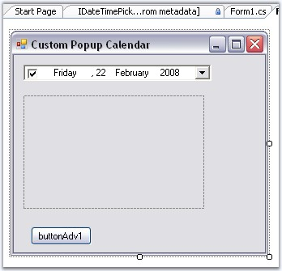
Figure 284: Control added to the Form
2. Create a control that implements the IDateTimePickerAdvCalendar interface using the below code.
|
[C#]
//Creating Calendar which implements the IDateTimePickerAdvCalendar private MyCustomCalendar MonthCalendar;
//Initializing the Calendar this.MonthCalendar = new MyCustomCalendar();
//Defining the Calendar Class which implements IDateTimePickerAdvCalendar public class MyCustomCalendar : MonthCalendar, IDateTimePickerAdvCalendar { private bool active;
public bool Active { get { return active; } set { active = value; } }
public System.Drawing.Font CalendarFont { get { return Font; } set { Font = value; } }
public Color CalendarForeColor { get { return ForeColor; } set { ForeColor = value; } }
public Color CalendarMonthBackground { get { return BackColor; } set { BackColor = value; } }
public DateTime Value { get { return SelectionStart; } set { SelectionStart = SelectionEnd = value; } }
public event DateTimePickerAdv.NullButtonEventHandler NullButtonDown; public event DateTimePickerAdv.SelectDateEventHandler SelectDate; public event DateTimePickerAdv.DateChangedEventHandler DateChange;
public MyCustomCalendar() { this.DateSelected += new System.Windows.Forms.DateRangeEventHandler(OnDateSelected); this.DateChanged += new System.Windows.Forms.DateRangeEventHandler(OnDateChanged); }
protected void OnDateSelected(object sender, System.Windows.Forms.DateRangeEventArgs e) { if (SelectDate != null) { SelectDate(this, new EventArgs()); } } protected void OnDateChanged(object sender, System.Windows.Forms.DateRangeEventArgs e) { if (DateChange != null) { DateChange(this, new EventArgs()); } }
public string Culture { get { return "Not Supported"; } }
public void FireNullEvent() { if (NullButtonDown != null) { NullButtonDown(this, new EventArgs()); } }
CultureInfo IDateTimePickerAdvCalendar.Culture { get { throw new Exception("The method or operation is not implemented."); } set { throw new Exception("The method or operation is not implemented."); } } } |
|
[VB.NET]
'Creating Calendar which implements the IDateTimePickerAdvCalendar Private MonthCalendar As MyCustomCalendar
'Initializing the Calendar Me.MonthCalendar = New MyCustomCalendar()
'Defining the Calendar Class which implements IDateTimePickerAdvCalendar Public Class MyCustomCalendar Inherits MonthCalendar Implements IDateTimePickerAdvCalendar
Private m_active As Boolean
Public Property Active() As Boolean Get Return m_active End Get Set(ByVal value As Boolean) m_active = value End Set End Property
Public Property CalendarFont() As System.Drawing.Font Get Return Font End Get Set(ByVal value As System.Drawing.Font) Font = value End Set End Property
Public Property CalendarForeColor() As Color Get Return ForeColor End Get Set(ByVal value As Color) ForeColor = value End Set End Property
Public Property CalendarMonthBackground() As Color Get Return BackColor End Get Set(ByVal value As Color) BackColor = value End Set End Property
Public Property Value() As DateTime Get Return SelectionStart End Get Set(ByVal value As DateTime) SelectionStart = SelectionEnd = value End Set End Property
Public Event NullButtonDown As DateTimePickerAdv.NullButtonEventHandler Public Event SelectDate As DateTimePickerAdv.SelectDateEventHandler Public Event DateChange As DateTimePickerAdv.DateChangedEventHandler
Public Sub New() AddHandler Me.DateSelected, AddressOf OnDateSelected AddHandler Me.DateChanged, AddressOf OnDateChanged End Sub
Protected Sub OnDateSelected(ByVal sender As Object, ByVal e As System.Windows.Forms.DateRangeEventArgs) RaiseEvent SelectDate(Me, New EventArgs()) End Sub Protected Sub OnDateChanged(ByVal sender As Object, ByVal e As System.Windows.Forms.DateRangeEventArgs) RaiseEvent DateChange(Me, New EventArgs()) End Sub
Public ReadOnly Property Culture() As String Get Return "Not Supported" End Get End Property
Public Sub FireNullEvent() RaiseEvent NullButtonDown(Me, New EventArgs()) End Sub
Private Property Culture() As CultureInfo Implements IDateTimePickerAdvCalendar.Culture Get Throw New Exception("The method or operation is not implemented.") End Get Set(ByVal value As CultureInfo) Throw New Exception("The method or operation is not implemented.") End Set End Property End Class |
3. Set the Active property of the MonthCalendar to True. Set the DateTimePickerAdv's CustomPopupWindow property to the PopupControlContainer control. Set the DateTimePickerAdv's CustomDrop property to the True.
|
[C#]
this.dateTimePickerAdv1.CustomDrop = true; this.dateTimePickerAdv1.CustomPopupWindow = this.popupControlContainer1; //Setting the DateTimePickerAdv control to consider the interface events by enabling Active property this.MonthCalendar.Active = true; //Adding Calendar to the Popup Control Container this.popupControlContainer1.Controls.Add(this.MonthCalendar); |
|
[VB.NET]
Me.dateTimePickerAdv1.CustomDrop = True Me.dateTimePickerAdv1.CustomPopupWindow = Me.popupControlContainer1 'Setting the DateTimePickerAdv control to consider the interface events by enabling Active property Me.MonthCalendar.Active = True 'Adding Calendar to the Popup Control Container Me.popupControlContainer1.Controls.Add(Me.MonthCalendar) |
4. In the button click event, call the MyCustomCalendar's FireNullEvent method.
|
[C#]
private void buttonAdv1_Click(object sender, EventArgs e) { //Calling the below method to fire the Null Event of the Calendar control created MonthCalendar.FireNullEvent(); } |
|
[VB.NET]
Private Sub buttonAdv1_Click(ByVal sender As Object, ByVal e As EventArgs) 'Calling the below method to fire the Null Event of the Calendar control created MonthCalendar.FireNullEvent() End Sub |
5. Run the application and click the dropdown button of the DateTimePickerAdv control to display the custom popup.
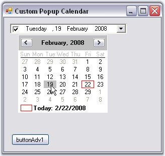
Figure 285: CustomPopup for the DateTimePickerAdv Control
6. When you click the button, the DateTimePickerAdv will display the NullString specified in NullString property.
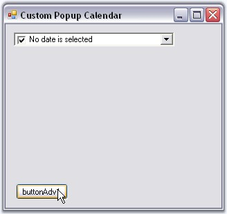
Figure 286: NullString Displayed in Text Field
A sample which demonstrates adding a MonthCalendarAdv itself as a custom popup calendar to the DateTimePickerAdv control is available in the below sample installation location.
..\My Documents\Syncfusion\EssentialStudio\Version Number\Windows\Tools.Windows\Samples\2.0\Editors Package\CalendarControls